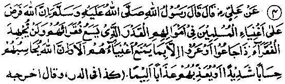
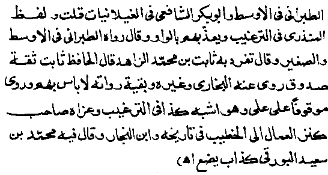
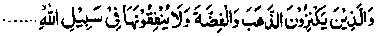
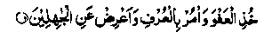
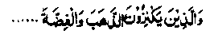
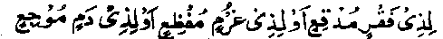
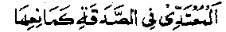
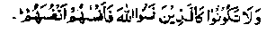
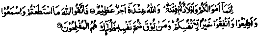

Chapter Five · Section (b): Ahadith threatening punishment for non-payment of Zakaat
2. The rich owe Zakaat to the poor; they will be called to account for non-payment of Zakaat, on the Day of Resurrection


Hadith 4
Rasulullah Sallallaho alaihe wasallam has said, ‘Allah Ta'ala has enjoined upon the rich to pay (Zakaat) on their wealth, as much as should suffice for the poor ones among them. And nothing distresses the poor, when they are hungry or naked, more than the neglectfulness of the rich who do not pay what is due from them (i.e. do not pay it in full). Beware! Allah Ta'ala will call such people to a stern account and punish them with most severe punishment (for the neglect of their obligatory duty).
Note: The Hadith means that Allah Ta'ala, Who is All-Knowing, has made it compulsory (Fardh) for the rich Muslim to give away (as Zakaat) the precise fraction of their wealth which, if fully paid according to the prescribed standards, would suffice for the needs of the poor among the Muslims, so that no member of the Ummah would starve or suffer from want of clothes. This fact is definite and self-evident The point has been explained more clearly in a detailed Hadith related on the authority of Abu Zarr Ghifaari Radhiallaho anho, which has been included by Faqeeh Abul-Laith Samaraqandi Rahmatullah alaihe in his book, ‘Tanbeeh-ul-Ghafileen. In this Hadith, the narrator, among other questions, asked Rasulullah, Sallallaho alaihe wasallam ‘O Rasulullah you have commanded us to pay Zakaat; what is Zakaat"? ‘Rasulullah Sallallaho alaihe wasallam replied, "O Abu Zarr, he who is not trustworthy has no Imaan; and the Salaat of a person who does not pay Zakaat is not accepted; Allah Ta'ala has enjoined upon the rich that much Zakaat (on their property) as would suffice for the needs of their poor. On the Day of Resurrection, Allah Ta'ala will call them to account for the Zakaat due on their property and punish them for any default." This Hadith clearly indicates that the above-mentioned saying of Rasulullah Sallallaho alaihe wasallam is specifically about Zakaat.
Imaam Ghazali Rahmatullah alaihe writes in ‘Ihyaa-ul-Uloom’ that Allah Ta’ala has threatened with dire punishment those who neglect to pay Zakaat The Holy Qur’an says:

They who hoard up gold and silver and do not spend it in the path of Allah…." To the end of the Ayat (at-Taubah: 34
35).
where ‘spending in the path of Allah’ means paying Zakaat on one’s property. He then goes on to say that Zakaat is of six kinds:-
1. Zakaat on the animals;
2. Zakaat on gold, silver, etc.
3. Zakaat on wealth invested in business.
4. Zakaat on mines or hidden treasures, etc.
5. Zakaat on the produce of the land.
6. The Sadaqat-ul-Fitr (Wajib) paid at the end of Ramadhan.
All the four Imaams (legists) of Fiqh are agreed that Zakaat is due on all the six kinds of property listed above, except that the Hanafi school holds that, instead of Zakaat, one-fifth (khumus) of the wealth procured from a mine is incumbent (Wajib) upon its owner. Certainly, If every Muslim is particular about regular payment of Zakaat due on each kind of property every year, no poor man would ever die of hunger.
Some Ulama have inferred from the above Hadith related by Ali Radhiallaho anho that something more than Zakaat is due on property, but the view is not tenable; this interpretation of the Hadith contradicts another Hadith related by Ali Radhiallaho anho himself, which says, "Rasulullah Sallallaho alaihe wasallam has said that Zakaat has abrogated the obligatory nature of all other Sadaqaat”. This Hadith has also been transmitted in a ‘Merfoo’ (traceable to Rasulullah) form Imaam Razi Jassass Rahmatullah alaihe has written in his book, ‘Ahkaam-ul-Qur’an’ that it is a saying of Ali Radhiallaho anho, which has been confirmed through a more reliable chain of transmission.
The Compiler of ‘Kanz-ul-Ummal’ has quoted the same Hadith, from several collections of Ahadith, with the version: ‘Zakaat has abrogated every other Sadaqah’ (previously taken to be obligatory) mentioned in the Holy Qur’an; the obligatory bath taken after sexual intercourse (Ghusl-e-Janabat) has abrogated obligatory nature of all other baths; the fasting during Ramadhan has abrogated the obligatory nature of all other fasts, the slaughtering of sacrificial animals on Eid-ul-Adhhaa has abrogated all other obligatory slaughters of animals. Ali Radhiallaho anho has said, "If a man were to possess all the wealth of the world, with the pure motive of winning Allah’s pleasure by spending it for the cause of Allah, he could still claim to be an ascetic. This saying has also been quoted in Chapter six, below. Some Ulama have said that, before the commandment of Zakaat, it was obligatory to give away (as Sadaqah) all that exceeded one’s needs, but the command to pay Zakaat abrogated (automatically) the previous injunction. Allama Suyuti Rahmatullah alaihe has said that Suddi Rahmatullah alaihe held the same view, which he has expressed in his commentary on the half Ayat:

"Keep to forgiveness (O, Muhammad) and enjoin kindness-... (al-A'raaf: 199)
Therefore implying the above , even if something had been made obligatory to be paid on property, it has since been abrogated by Zakaat. Moreover, such a reading goes against another Hadith which reports Rasulullah Sallallaho alaihe wasallam as saying, "Whoever has paid Zakaat, has fulfilled what was due on his property; and if anyone gives more than that, it will be an additional credit for him". (Kanz, related on the authority of Hasan Rahmatullah alaihe in ‘Mursal’ form). We have already quoted above several Ahadith of the same import, and even clearer is the following Hadith, narrated on the authority of Abu Hurairah Radhiallaho anho and similar to the one related by Ali Radhiallaho anho: "If Allah Ta‘ala considered the amount of Zakaat received from the rich insufficient for the needs of the poor, He would have made it obligatory for them to pay something more, apart from Zakaat. So, if now the poor suffer from hunger, it is because of the wrong-doing of the rich." (Kanz). In other words, as the rich do not pay in full the Zakaat due from them, the poor have to starve for want of food. In his book, "Majma-uz-Zawaid", Haithami, the Muhaddith Rahmatullah alaihe, has transmitted this Hadith on the authority of Ali Radhiallaho anho, quoting it in the very beginning of the chapter entitles ‘On the obligatoriness of Zakaat! For the same reason, the author of ‘Kanz-ul-Ummal’ has included it in the ‘Book on Zakaat’.
Hafiz Ibnu-Abdil-Barr Rahmatullah alaihe says, ‘The Ayat beginning:

(They who hoard up gold and silver............
and other similar Ayaat apply to those who do not pay Zakaat on their hoarded property. This is the consensus of the Ulama of Fiqh (Islamic Jurisprudence) and the same view was held by the Sahabah viz Umar, Ibne-Umar, Jabir, Abdullah Ibne Masud, Abdullah Ibne Abbas Radhiallaho anhum. The following Hadith, transmitted by Abu Dawood and others, also supports this view: Umm-e-Salmah Radhiallaho anha says that she was once wearing an ornament of gold and she asked Rasulullah Sallallaho alaihe wasallam, ‘Is this (ornament) to be treated as Kanz (hoarded treasure, the owner of which shall be severely punished on the Day of Judgment)"? Rasulullah Sallallaho alaihe wasallam replied, "Any property on which Zakaat is payable is not ‘Kanz’, provided the Zakaat is paid on it". Furthermore., this is corroborated by the following Hadith, transmitted by Tirmizi Rahmatullah alaihe and Hakim Rahmatullah alaihe on the authority of Abu Hurairah Radhiallaho anho, ‘When you have paid the Zakaat, you have fulfilled what was due from you on your property’.
Another Hadith, transmitted on the authority of Jabir Radhiallaho anho reports Rasulullah Sallallaho alaihe wasallam as saying, "After you have paid Zakaat on your property, you have purified it of its inherent evil". Haakim Rahmatullah alaihe has transmitted the same Hadith saying that it is a "Marfoo’ Hadith (traceable to Rasulullah Sallallaho alaihe wasallam) according to the standards set by Imaam Muslim Rahmatullah alaihe. Baihaqi Rahmatullah alaihe says that it is a ‘Mauqoof Hadith (not traceable to Rasulullah Sallallaho alaihe wasallam), as the chain of its authorities reaches up to Jabir Radhiallaho anho, a Sahabi. Abu Zar‘ah Rahmatullah alaihe also calls it a ‘Mauqoof Hadith, with the chains of its transmitters reaching up to Jaabir Radhiallaho anho and says that it is a Sahih Hadith with the wording: "The property on which Zakaat has been paid is not ‘Kanz’ (hoarded treasure)." Ibne Umar and Ibne Abbas Radhiallaho anhuma have also reported the same words.
Ataa Rahmatullah alaihe and Mujahid Rahmatullah alaihe have said, "The property on which Zakaat has been paid is not a ‘Kanz’, even though it be buried in the ground; and the property on which Zakaat has not been paid is a ‘Kanz’, even though it be lying on the surface of the earth." Here, of course, the word ‘Kanz’ denotes a term of Shariah (Islamic Law) and it has not been used as a common word with usual dictionary meanings. (That is to say, though Kanz literally means a hidden treasure, in Shariah (Islamic Law) it is a term applied to any property on which Zakaat has not been paid.) Barring a few exceptions, I have not found any one holding a view at variance with the one mentioned above that the term Kanz applies to the property on which Zakaat has not been paid.
However, a few illustrious Sahabah like Ali and Abu Zarr Radhiallaho anhuma and some of the ascetics (Zaahid) among the followers (Tabi‘een), like Dhahhaak Rahmatullah alaihe, have said that something more, apart from Zakaat, is due on one’s property. Of these, Abu Zarr Radhiallaho anho has gone so far as to say that provision exceeding one’s sustenance is to be regarded as kanz. Ali Radhiallaho anho has been reported as saying that the amount exceeding four thousand (Dirhams etc), is to be treated as kanz while Dhahhak Rahmatullah alaihe says that ten thousand Dirhams is to be considered as property in excess. Ibrahim Nakh‘ee, Mujahid, Sha’bi and Hasan Basari Rahmatullah alaihim are of the view that something more is payable as Sadaqah on wealth, apart from Zakaat Ibne-Abdil-Barr Rahmatullah alaihe says that with the above exceptions, all other scholars of the earlier and later ages are agreed on the point that kanz is that property on which Zakaat has not been paid, and they opine that the Ayaat and Ahadith quoted by the Ulama of the other school of thought (in support of their view) actually emphasize the desirability of spending more than the prescribed amount, rather than advocate its obligatoriness, or else these commandments were revealed prior to the command to pay Zakaat, which has abrogated all previous commandments, just as the command to fast on the lOthjof Muharram was abrogated when fasting during Ramadhan was made obligatory. Still, the fact remains that fasting on 10th Muharram (as a supererogatory act), or spending more than the prescribed amount (as Nafl Sadaqah) are acts of virtue. (Ittehaf)
This view is also supported by the fact that when the Muhajireen among the Sahabah emigrated to Madinah Munawwarah, they possessed nothing in the world; so Rasulullah Sallallaho alaihe wasallam established the bond of brotherhood (Muakhaat) between the well-to-do Ansaar of Madinah Munawwarah and the poor emigrants (Muhajireen) from Makkah. The Ansaar proposed that half the property belonging to each one of them should be given to his brother from among the Muhajireen, but Rasulullah Sallallaho alaihe wasallam did not accept the suggestion and, instead, told the Muhaajireen to work on the fruit-plantations owned by the Ansaar, in return for a share in the produce. Under such conditions, the bond of brotherhood was established between Abdur Rahman Ibne Auf and Sa‘d bin ar-Rabi’ Ansaari. Sa‘d said to Abdur Rahman , ‘It is known to everybody that I am the richest person among the Ansaar, I request you to accept half of my property.’ But Abdur Rahman Radhiallaho anho declined to accept tire offer and said, ‘Guide me to the market.’ So, Abdur Rahman Radhiallaho anho went to the market and started business. If the poor had a right to take the extra wealth of the rich, without being driven to it by extreme want, why did Rasulullah Sallallaho alaihe, wasallam refuse to take the property of the Ansaar? Why did Abdur Rahman Radhiallaho anho refuse to have his (due) right?
The collections of Ahadith and biographies of Rasulullah Sallallaho alaihe wasallam contain innumerable incidents about the Ashaab-us-Suffah, the poor emigrants (Muhaajireen) who lived on a platform in the Holy Masjid at Madinah, without any means of subsistence, sometimes going without food consecutively for many days. They would sometimes fall to the ground from starvation. Even though there were many rich Sahabah among the Ansaar, Rasulullah Sallallaho alaihe wasallam did not compel anyone to distribute his extra wealth among these people, though he often exhorted them to help the needy.
Abu Hurairah Radhiallaho anho says that there were seventy people in the Suffah and not one of them had a full sheet of cloth (to cover his body). (Durre Manthur). Abu Hurairah Radhiallaho anho has related many incidents about his own hard life, which are contained in the collections of Ahadith. He says, "By Him Who Alone is to be worshipped, I used to lie with my stomach pressed against the ground, suffering from pangs of hunger. On some occasions, I tied a stone to my stomach (to appease the spasms of hunger). Once, I intentionally sat by the wayside, waiting for someone to invite me to his house. Soon Abu Bakr Radhiallaho anho passed that way. I entered into conversation with him and asked him a question about an Ayat, expecting him to invite me to his house, as was his wont, but he answered my question briefly and went away. After him, Rasulullah Sallallaho alaihe wasallam came along and, when he saw me, a smile brightened his face and he said, ‘Come along with me’. I accompanied him to his house, where a bowl of milk was presented to him and, upon his asking, ‘Who brought this milk?’, he was told that such and such person had sent it as a present. Rasulullah Sallallaho alaihe wasallam then told me to go and invite all my companions of the ‘Suffah’. (They had no families, nor any means to support themselves, nor was anyone responsible for providing food for them or to look after their affairs. Rasulullah Sallallaho alaihe wasallam would pass on to them all that he received as Sadaqah and would share with them whatever was presented to him.) When Rasulullah Sallallaho alaihe wasallam bade me invite all of them, I naturally felt disappointed, for there was only one cupful of milk and there would be too many of us to share the drink. I said to myself, The milk is barely sufficient for a single person. If I were given to drink it all, I could gain some strength by it. Also, I was aware that, when they came, I would be told to serve it to the others and a server is always the last to drink and, more often than not, he gets the least of the entire lot But I had to comply with what Rasulullah Sallallaho alaihe wasallam had told me to do. So, I went out and fetched all of them. When they had come, Rasulullah Sallallaho alaihe wasallam handed me the bowl and bade me serve it to them . I began to serve the milk, taking the bowl to each one of them in turn, who drank to his fill and finally returned the same to me. When everybody had taken his fill, Rasulullah Sallallaho alaihe wasallam said to me, ‘Only you and I are left now,’ and on my replying ‘Quite so’ he said, ‘Sit down then and drink,' So, I drank to my heart’s desire. Rasulullah Sallallaho alaihe wasallam said, ‘Have some more’ and I drank some more; he again said, ‘Have some more’ and I drank some more and said, 0 Rasulullah, my stomach cannot hold any more of it’. He then drank the remaining milk himself":
Another story related about himself, runs thus: "Once I had nothing to eat for three consecutive days and fell on the ground while walking on the way to Suffah. The boys in the street said, ‘Abu Hurairah has gone crazy’ but I replied, ‘Not I, but you are mad’. Somehow I managed to reach the Suffah where I saw Rasulullah Sallallaho alaihe wasallam serving Thareed (bread crumbled in gravy) to my friends out of two bowls sent to him by someone. I stood there, raising my head time and again, hoping to be noticed by Rasulullah Sallallaho alaihe wasallam who, I thought, would invite me to share the meal with them. I waited' till everybody had taken his share and nothing was left in the bowls. Rasulullah Sallallaho alaihe wasallam then ran his fingers all around inside the bowls, gathering the left-overs into a morsel, which he placed on his fingers and said to me, ‘Take this with an invocation to Allah Ta'ala.’ I ate it and my stomach was filled".
Fudhala bin ‘Ubaid Radhiallaho anho says: "Sometimes Rasulullah Sallallaho alaihe wasallam sat, after performing Fajr Salaat, and saw some of the ‘Suffah’ brothers falling to the ground on account of pangs of hunger. He would say, ‘If you knew how exalted your ranks are, in the sight of Allah, you would love hunger and poverty more than you do now.’"
Under Ayat No. 30, in section one above, has been related the detailed story of some people of the Mudhar tribe who came to Rasulullah Sallallaho alaihe wasallam, hungry and scantily clothed, having little to cover their bodies and nothing to eat, suffering from starvation. Rasulullah Sallallaho alaihe wasallam, finding nothing inside his houses for them, then assembled the people and delivered a sermon exhorting them vehemently to give Sadaqah, whereupon people brought donations. Two piles of food and clothing gathered up in front of him, all of which he distributed among the poor tribesmen; all this was done through persuasion. Rasulullah Sallallaho alaihe wasallam did not compel anyone to give away money, nor called anyone to account for possessing wealth in excess of his requirements.
Anas Radhiallaho anho relates that once an Ansaari came to Rasulullah and begged from him. Rasulullah Sallallaho alaihe wasallam asked him, ‘Have you got nothing in your house?" He said, "I have a piece of matting, of which I spread a part on the ground and use the other as a coverlet, and also a wooden bowl for drinking water." Rasulullah Sallallaho alaihe wasallam asked him to bring both things to him and then auctioned these for two dirhams, which he gave to the man, directing him to buy food for his family with one dirham and buy an axe with the other and bring it to him. When he brought the axe, Rasulullah Sallallaho alaihe wasallam himself fixed a handle on it and said, "Go, gather firewood and sell it, and do not let me see you here for a fortnight." ‘The man did as directed and came again on the fifteenth day. He had earned ten dirhams, and bought food with them. Rasulullah Sallallaho alaihe wasallam said, ‘This is better for you than begging, which would have caused a spot on your face on the Day of Resurrection, and then added,

Begging is allowed only for three people: One who is in grinding poverty, one who owes a heavy amount of penalty or one who is responsible for blood-money, which he finds it difficult to pay".
Rasulullah Sallallaho alaihe wasallam permitted these three categories of men to ask other people for help, but did not allow the man who had asked for help to beg from people, although he was extremely poof, nor did he entrust anyone with the responsibility for his provision. In short, there are thousands of incidents related in the collections of Ahadith which bear testimony to the fact that only Zakaat, and nothing more than that, is obligatory on property. And the following oft-quoted saying of Rasulullah Sallallaho alaihe wasallam also corroborates the above statement:

The one who exceeds the limits of propriety while giving away Sadaqah (or while collecting it) is like one who refuses to pay it.
Rasulullah Sallallaho alaihe wasallam appointed Dhahaak Ibne Qais Radhiallaho anho to collect Zakaat, who brought the best camels of the entire lot owned by the people. On seeing them, Rasulullah Sallallaho alaihe wasallam said, You have taken the best property of the people.’ Dhahaak Radhiallaho anho said, "O Rasulullah, you will soon be going on a Jehaad expedition, so I selected those camels that are good for riding and carrying equipment for Jehaad". Rasulullah Sallallaho alaihe wasallam said, "Go and return these animals to the owners and fetch others of the ordinary kind." (Majma-uz-Zawaaid)
These were the instructions of Rasulullah Sallallaho alaihe wasallam to collectors of Zakaat at a time when he needed equipment for Jehaad and was exhorting the Sahabah to donate for the cause, so much so that, moved by his exhortation, Abu Bakr Radhiallaho anho donated his entire belongings, Umar Radhiallaho anho gave away half of his entire possessions and Abdur Rahman Ibne Auf Radhiallaho anho once said, ‘O Rasulullah, I own four thousand (dirhams or dinaars); I have kept back two thousand for my household expenses and brought two thousand to be spent for the cause of Allah Ta'ala’. And another Sahabi said, ‘I worked as a labourer all night long and received two Saa‘s (a measure weighing about three kgs.) of dates as wages; I have left half the amount at home, for my family and brought the remaining half to present it to you’. (Durre-Manthur). Abu Mas‘ud Radhiallaho anho says, "Whenever Rasulullah Sallallaho alaihe wasallam advised us to give Sadaqah, and some of us possessed nothing, they used to go to the market, work as porters and get a ‘Mudd’ (a measure of grain) of dates and then give it away as Sadaqah". (Bukhari)
The subject has been treated at length in Chapter one, under Hadith No. 24. Notwithstanding all this concern about the equipment for Jehaad, Rasulullah Sallallaho alaihe wasallam did not accept, as Zakaat, the camels of good quality instead of those of the ordinary kind (not liking to act against the general rule in collection of Zakaat). It becomes evident that, so far as the obligation is concerned, nothing more is due on property, apart from Zakaat. As for spending generously for the cause of Allah Ta'ala, irrespective of its incumbency or otherwise, a Muslim is upon to spend and not to hoard up wealth. The Quranic Ayaat and the Ahadith of Rasulullah Sallallaho alaihe wasallam quoted in Chapter one of the book clearly state, in the strongest terms, the fact that wealth is really meant for spending on things which earn the pleasure of Allah Ta'ala, (i.e. to spend much on others and, as far as possible, to spend little on their own needs). Only such wealth will be of real benefit to a man which he has deposited in the Treasury of Allah Ta'ala (i.e. spent for His sake) and no harm can come to it, unlike the banks of this world which might be looted, destroyed, or go bankrupt. The wealth deposited with Allah Ta'ala will benefit a man on the Day when he will be in dire need of help. Allah Ta'ala says, "O man, let your treasured wealth flow unto me; for then it will be safe against fire, nor will it be stolen, nor swept away by the water; and I shall return it to you at a time when you will be extremely needy." (Targheeb)
We have quoted an Ayat at serial No. 30 in Chapter one, in which Allah Ta'ala says:

And let every soul look to that which it sendeth on before for the morrow. And be not you as those who forgot Allah; therefore, He caused them to forget their souls. (al-Hashr: 18-19)
And the following Ayaat have been quoted at serial No. 31 in the same context:

Your wealth and your children are only a temptation and a trial. And spend; that is better for your souls. (at-Taghabun: 15-16)
A Hadith at serial No.l in the same Chapter says that Rasulullah Sallallaho alaihe wasallam said, "If I possessed gold to the extent of Mount Uhad, I would not like to keep any of it with me (for more than three days), except what I put aside for paying a debt". And according to the Hadith (quoted at serial No. 3 in the same context), to give away whatever surplus you have is better for you and to withhold it is worse for you.’ Also, we have given at serial No. 12 in the same Chapter the similar advice of Rasulullah Sallallaho alaihe wasallam to Asmaa Radhiallaho anho, in which he exhorted her to spend without making calculations, and to give away whatever she could for the sake of Allah Ta'ala. Also in point here is the incident related at serial No. 20 above, on the authority of Aishah Radhiallaho anha, that Rasulullah Sallallaho alaihe wasallam asked what was left of a goat that they had slaughtered. When she told him that only the shoulder joint remained, while the rest had been distributed, he said, "The whole of it remains except its shoulder joint".
A number of Ahadith on this subject have already been quoted above. Regardless of what is obligatory and what is commendable or praiseworthy, one should bear in mind that only such property shall avail a person as he has remitted to tire Akhirah (with his own hands) in this life. If anyone wants to protect his hard-earned money and store it away for use at a time when he shall need it badly, let him spend it for the cause of Allah.
He will not only be sure to gain rewards in the Akhirah but also receive maximum benefits in this world, for, Sadaqah is effective protection against afflictions and, by its blessings, many a person is cured of diseases and saved from meeting an evil death. A well-known Hadith reports Rasulullah Sallallaho alaihe wasallam as saying, "Envy is justified only regarding two persons: one whom Allah Ta'ala has given knowledge of the Qur’an and he remains engrossed in reciting it, and acting upon it day and night; and a man whom Allah Ta'ala has given wealth and he is all the time busy spending it generously for the cause of Allah." (Majma-uz-Zawaaid). We have already quoted a Hadith in Chapter Two, at serial No. 3, to the following effect, "Those who have much property shall gain scanty rewards, except for those who spend for the cause of Allah, with both hands, giving to those on their left and on their right, before them and behind them". In another Hadith quoted at serial No. 7 in Chapter 2, Rasulullah Sallallaho alaihe wasallam said, ‘He is not a (true) Mo’min at all who eats his fill while his neighbour is suffering from hunger.’
We have discussed the subject in detail in the foregoing chapters of this book, the crux of which is that it is below the dignity of a true Muslim to hoard up wealth. The necessity of wealth is like the necessity to void bowels; if a person cannot ease himself for a day or two, he shall have to consult the physician, but if somebody suffers from loose bowels, he shall have to go to the doctor for treatment and cure. Now, if the foolish person keeps this waste in his house, not bothering to sweep it away, his house will be filled with foul smell, he will go distracted and will be sure to fall a prey to diseases. Likewise, wealth is necessary for life and we have to procure it by various means; but, at the same time, it has a filthy aspect and its excess can be harmful to the soul, if it is not given away and disposed of immediately, like sewage. The diseases that breed on wealth are: pride and vanity, disdain for others and looking down upon the humble, wanton debauchery and licentiousness, etc. In short, the rich are prone to all manner of afflications that tarnish the soul. This is why Rasulullah Sallallaho alaihe wasallam supplicated Allah Ta'ala, saying:
"O Allah, make the provision of Muhammad’s family just sufficient to sustain life”. '
Rasulullah wished that his descendants should not be made to possess excessive wealth, which brings corruption in its wake. For the same reason, we see that most of the descendants of Rasulullah Sallallaho alaihe wasallam do not possess much wealth. There may be some exceptions, but they only prove the rule, and not the contrary. May Allah aid the author, the most insignificant of His men, to understand the corrupting nature of wealth. How blissful is the life of those who hate this world and its wealth!